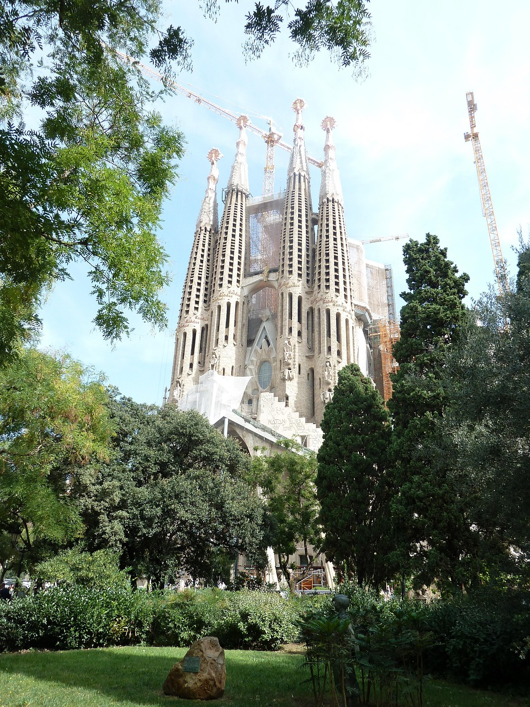
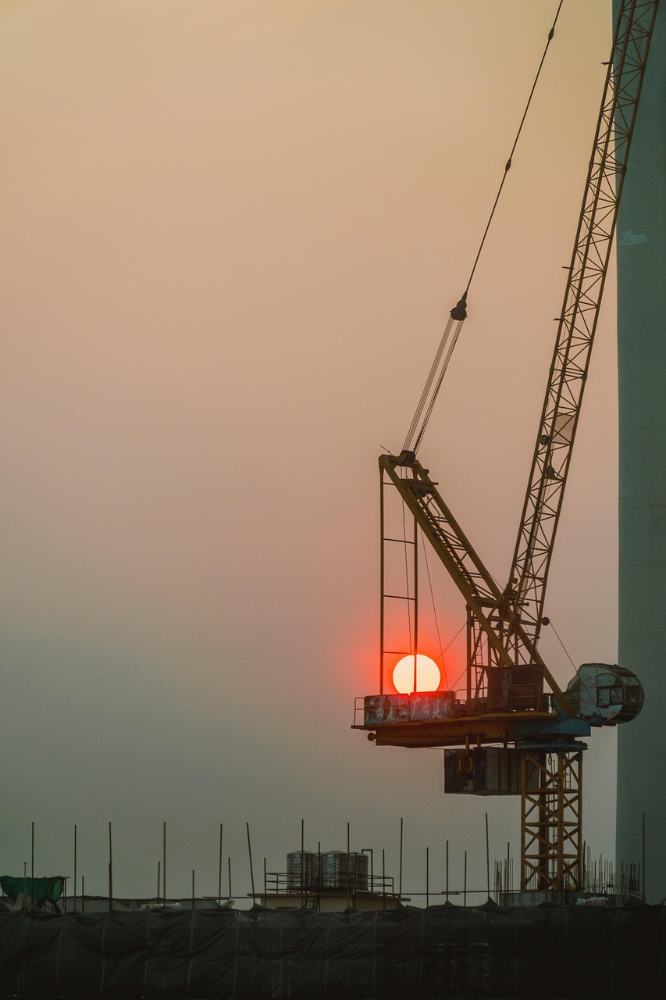
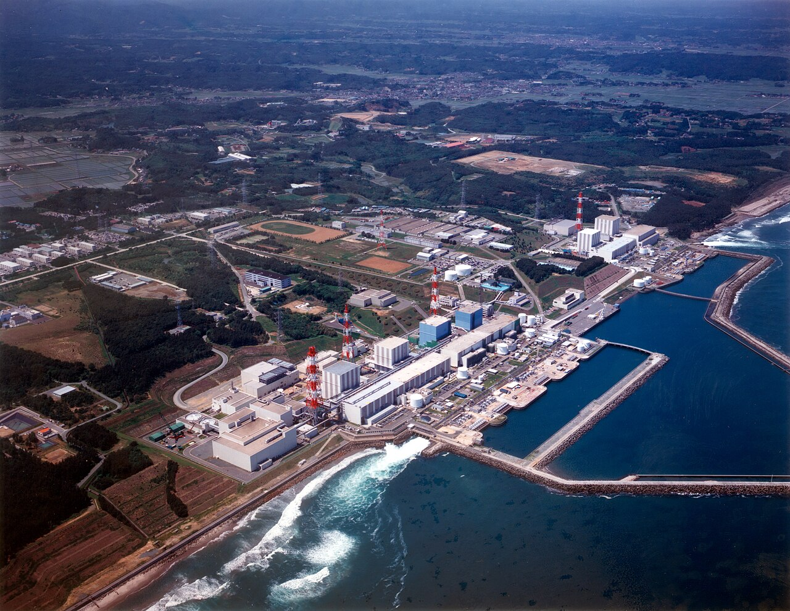
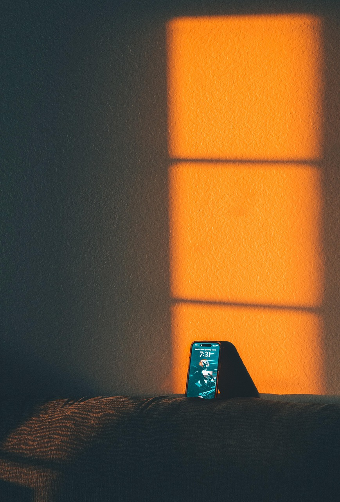

伝説の未完成建築
バルセロナのサグラダ・ファミリアは
144年
かけて、2026年に
主要な塔が完成しました。

日本の大事業ランキング
サグラダ・ファミリアとは違い
終わりの見えない事業が、
日本にはあります。
3位：辺野古新基地
沖縄・辺野古の新基地建設は
17%
予算はすでに
84%
を
使いましたが、これだけです。
2位：リニア中央新幹線
東京と大阪を結ぶリニアは
2027年
開業予定でしたが、
今は時期も未定です。
総工費は5.5兆円から11兆円に倍増しました。

1位：福島第一原発廃炉
福島第一原発の廃炉完了目標は
30〜40年後
事故から15年たっても、
変わっていません。
費用は11兆円から21.5兆円に倍増しました。
共通点
終了時期を示せないまま、
金額だけが膨らんでいます。
サグラダ・ファミリアには、終わりがありました。
保存して、他の人にも
教えてあげてください。

日本の停滞を
象徴していると思いますか？
コメントで教えてください。